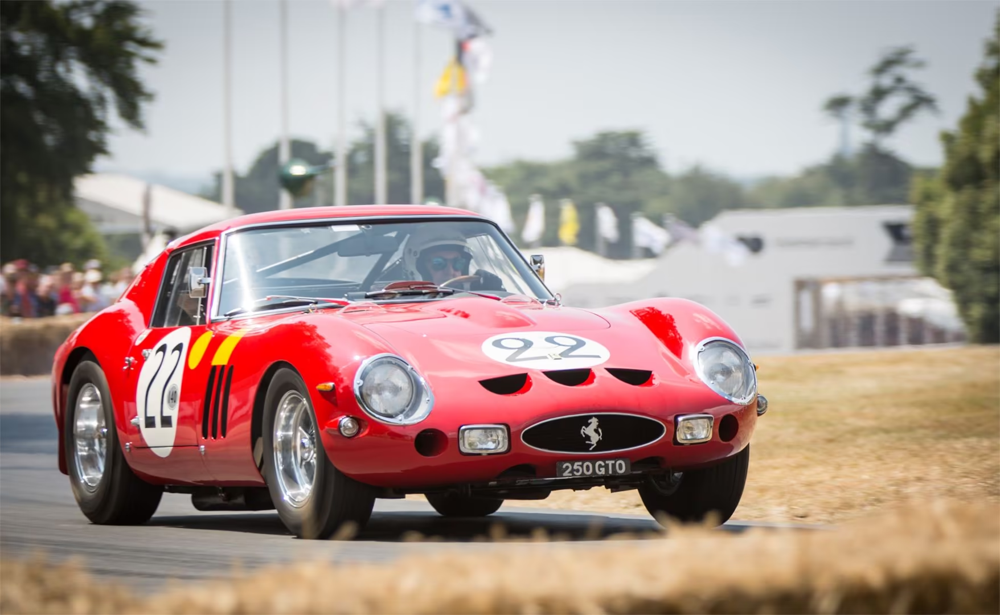
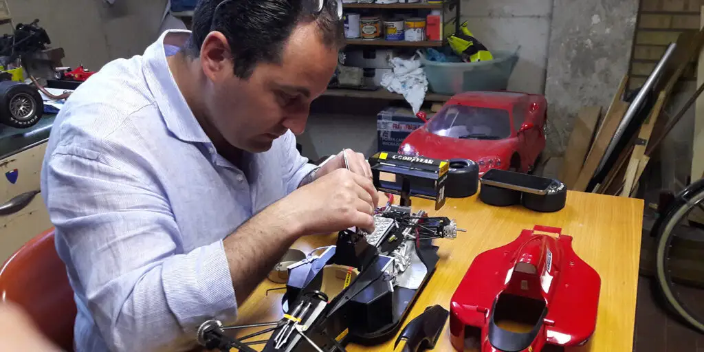
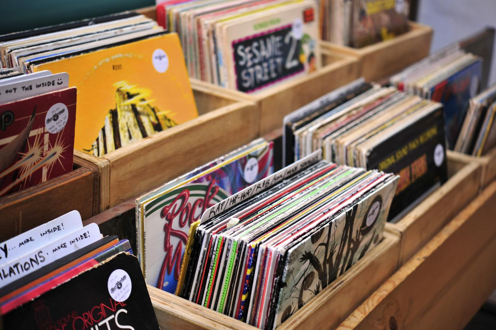

I have quite a few, actually. Alot of them rooted from my dad, while others I gained from meeting new people and friends. Others, I gained from being exposed to the Internet.
I have been a car guy for my entire life, and I will forever be a car guy. Words cannot explain how much I LOVE these mechanical machines. Everything about them, I absolutely love it. Especially the classics. Ferraris from the 60s, Early design of lamborghinis, 90s Japanese Sports cars, 50s Muscle cars, the list goes on and on and ON! I simply cannot replace them for anything, they're just that special to me.
I'm a big fan of Scale modelling, since I get to create things for a fraction of the price and size. They're great display pieces, and the things you can do with them are great. If you want to make a Diorama, say for example a historical battle, you can. You wanna make a tank blown up in half? That's possible too. Not to mention, there's like a sea of brands to choose from. Brands like:
It's limitless, there's so much to do. I love it and i will never stop doing these.
Wow, who knew right? Kidding. Anyway, I've been gaming for as long as i've been alive because again, it's thanks to my dad exposing me early. I mostly play shooters, racing games, and a bit of RPGs. But, Most cases i play Party games or shooters with friends. I don't really like playing alone, so when i'm playing im usually in a Voice call with buddies to make the experience more fun.
I love travelling alot, especially when it's a different country! You get to take a peek into a different culture and how they do things over there, and its great! You get to experience first hand what people are like from these different cultures, and you'll know what it's REALLY like, compared to what the internet is saying. And another thing, the Food! Oh my goodness, it's always so good and delicious to experience new cuisine! Not to mention, extremely authentic. It's just such a great feeling to try new things all at once, and travelling to a totally new country is the best way to do it.
Vinyl Records, or "Vinyl", LP, Plaka, however you wanna call it, is a piece of audio or music recorded onto a flat, black PVC Disc that works by having a needle run along the grooves to make sound. I collect these records, and I take pride in it. I'm 19, and people my age aren't really into this stuff. Normally, people over 30 are the ones that collect these since they grew up with them. But to me? I like how unique and "phyiscal" these medias are. It's so special to be able to hold a physical piece of music in your hands. Something you can feel and touch, and really connect with the artist. Music nowadays all have streaming, which is cool and all, but it's too fast for me. People just turn music into their backgrounds and I don't like that. For me, I want to be able to sit down and really enjoy a piece, so I collect these. So far, i have the following LPs in my collection:
There will be many more to come, but so far these are what I have.
{kind=link}
{kind=link}
{kind=link}
{kind=link}
{kind=link}
{kind=link}
{kind=link}
{kind=link}